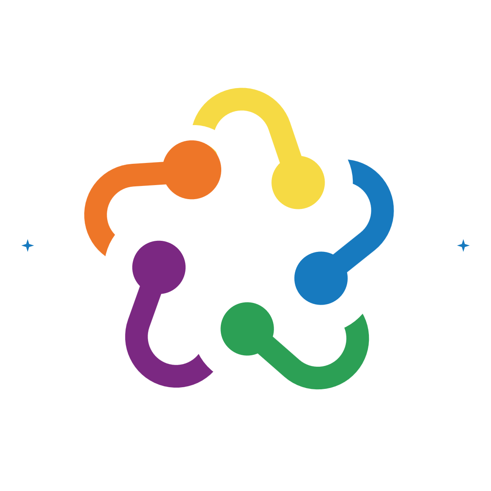

Dutch Repository Federation
Alastair Dunning (TU Delft), Maurice Vanderfeesten (VU Amsterdam), Simone Kortekaas (KB) and Hilde van Wijngaarde (VU Amsterdam) · October 2026
Loading the position paper…